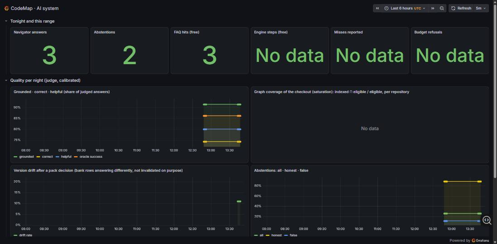
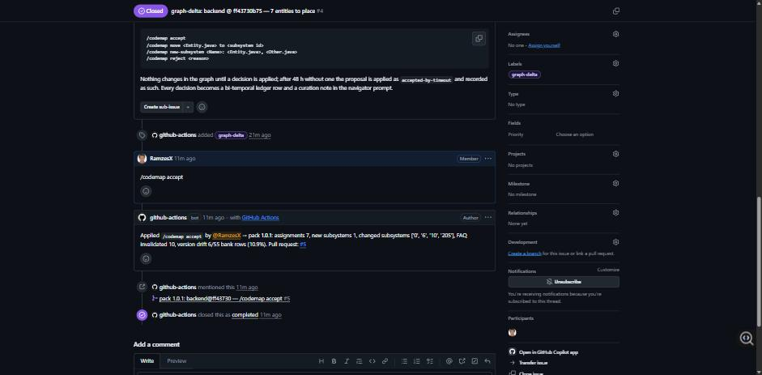
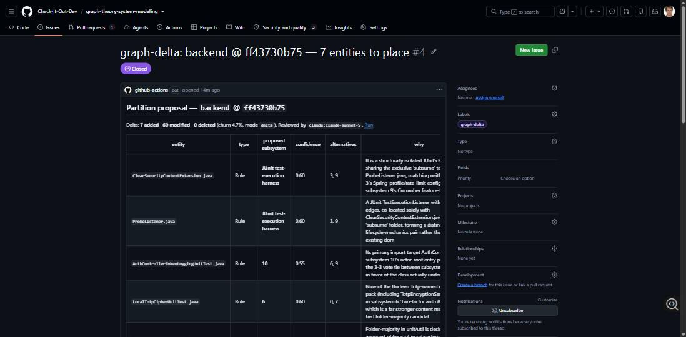
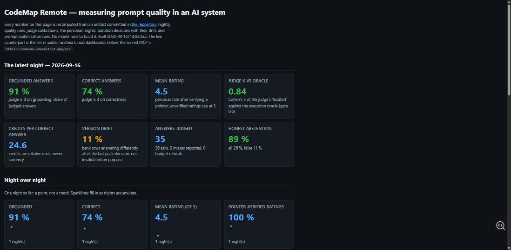

Every number on this page is recomputed from an artifact committed in the repository: nightly quality runs, judge calibrations, the personas' nights, partition decisions with their drift, and prompt-optimisation runs. No model runs to build it. Built 2026-09-18T04:21:32Z. The live counterpart is the set of public Grafana Cloud dashboards below; the served MCP is https://codemap.checkitout.app/mcp.
| persona | conversations | turns | credits | mean rating | misses |
|---|---|---|---|---|---|
haiku-ops | 4 | 82 | 104.1 | 4.6 | 3 |
haiku-pm | 4 | 48 | 95.2 | 4.7 | 0 |
opus-architect | 2 | 55 | 327.6 | 3.8 | 4 |
opus-reviewer | 2 | 68 | 37.9 | 3.0 | 9 |
sonnet-bugfixer | 3 | 56 | 78.0 | 4.1 | 0 |
sonnet-newcomer | 3 | 58 | 91.6 | 4.0 | 2 |
| pack | repo @ head | decision | by | placed | new subsystems | FAQ invalidated | drift | reclued |
|---|---|---|---|---|---|---|---|---|
1.0.1 | backend @ ff43730 | accept | RamzesX | 7 | JUnit test-execution harness | 10 | 6/55 (11 %) | — |
| run | mode | where | seed (val) | best (val) | candidates | metric calls | outcome |
|---|---|---|---|---|---|---|---|
2026-09-16-confirm-candidate | dry-run | box | 1.00 | — | — | 12 | seed measured |
2026-09-16-confirm-seed | dry-run | box | 0.92 | — | — | 12 | seed measured |
2026-09-16-modal-dry | dry-run | modal | 0.67 | — | — | 3 | seed measured |
2026-09-16-noproposal | gepa | box | 0.83 | 0.83 | 1 | 30 | no win — recorded |
2026-09-16b | gepa | box | 0.83 | 1.00 | 3 | 33 | promoted candidate |
| prompt | built | parent | why | gate |
|---|---|---|---|---|
v1 | 2026-09-16 | — | seed: the API navigator prompt's protocol + the big tier's graph lesson, rewritten for pointers | n/a (baseline) |
v2 | 2026-09-16 | v1 | GEPA run 2026-09-16b: val 0.8333333333333334 → 1.0 on 6 examples, 33 metric calls | promoted (0.03 gate) |



